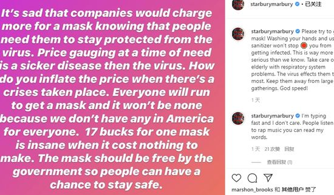

口述实录 | 疫情之下，美国社区开始慌了
原文链接 备份链接 CDC表示一天能做的测试只有100个，有些力不从心。 文、图 | 李 莹 今天（3月2日）是我滞留在美第38天#详见《口述实录 | 我大年夜出发去美国自助游，直到现在还被困在旧金山》#，美国已有100例新冠病毒感染肺炎 …

根据美国疾病控制与预防中心和各州公共卫生部门统计，截至美东时间3月8日晚7点，全美共报告新冠肺炎确诊病例572例，死亡21例，治愈10例。8日美国新增113例新冠肺炎，新增死亡病例2例。
目前，新冠肺炎已波及全美34个州，华盛顿州、加利福尼亚州、佛罗里达州、肯塔基州，纽约州，马里兰州，犹他州和俄勒冈州等8州宣布进入紧急状态。特别是大华府所在的华盛顿哥伦比亚特区、马里兰州和弗吉尼亚州7日全部出现确诊病例。

在此情况下，美国的口罩也成为了紧俏商品，商家趁机哄抬口罩价格。北控男篮主教练马布里通过个人社交媒体发文，痛斥了哄抬物价的行为，并且认为美国政府应该免费发放口罩。

马布里怒斥美国口罩太贵：一个要17美元？

马布里写道：“这些公司明明知道现在人们很需要口罩，还是抬高价格，这样的行为很是可悲。在别人最需要的时候哄抬物价，这样的行为简直比病毒还要可怕。如此的紧急关头，你们怎么能想着涨价的事情？每个人都需要口罩，但不是每个人都能得到，因为现在美国没有足够的口罩提供给每个人。相比于低廉的制造成本，一只口罩要卖到17美元，这真的太疯狂了。政府应该免费发放口罩的，这样才可以确保人们的安全。”
马布里还写道：“请赶紧戴上口罩！仅仅是用消毒液来洗手不足以避免你被感染。情况要远远比我们所想象的更加严重。一定要照顾好那些有呼吸系统疾病的老人家，他们更加容易感染病毒，也要让他们远离人群密集的地方。”
美国副总统喊话“没病别买口罩”背后：不是没用，是没货
《纽约时报》报道称，当地时间3月5日，美国副总统迈克·彭斯调研口罩制造商3M公司时呼吁美国民众，“如果普通民众没有生病就不要购买口罩。”
事实上，这已经不是彭斯第一次发出这样的呼吁了。当地时间2月29日，彭斯就曾在白宫召开的新闻发布会上表示，美国民众没必要购买防御新冠病毒的口罩，应该优先让医护人员获得口罩。
随着美国新冠肺炎病例数量不断上升，电商平台上，口罩及其他防护用品的价格一路飙升。《金融时报》3月3日报道称，在亚马逊网站上，有些商家甚至将免洗洗手液和口罩的价格提升至日常零售价的2000%。
该报道称，在亚马逊网站上，某个未经授权的零售商出售一包20只装的3M口罩，要价高达387美元，而正常零售价仅为14.99美元。一盒24瓶、每瓶2盎司的Purell洗手液，平时售价不到10美元，现在被卖到400美元。
彭博新闻社报道称，美国卫生与公共服务部（HHS）预计，如果新冠肺炎大规模爆发，美国将需要35亿只口罩。
美国消费者新闻与商业频道（CNBC）3月4日报道，美国卫生与公共服务部指出，一旦新冠病毒肺炎成为流行病，美国的口罩储备只够医护人员所需的1%。
口罩生产公司Prestige Ameritech的执行副总裁迈克·鲍恩表示，此次危机为美国的医院敲响了警钟，此前他们都是从国外供应商手中购买口罩。
据《纽约时报》报道，世界上大约一半的卫生口罩是在中国生产的，每天产量约为2000万只，一年超过70亿，供应给许多国家的医院和医务人员。
美国加急豁免中国口罩等医疗用品关税
当地时间3月6日，有美国媒体报道称，特朗普政府已经批准豁免自中国进口的100多种医疗产品的进口关税，包括口罩、手套和消毒湿巾。
报道称，美国政府这次批准了27家企业的关税豁免申请。这些企业在1月31日的截止日期之前，提交了申请，那时疫情主要发生在中国，但是美国公司已着手准备应对国内流行的情况了。
根据路透社报道，相较往常，此次这些企业的申请处理流程，明显被加快了。其他自中国进口产品的免关税申请审批往往要耗时数月之久。苹果公司去年10月31日，就提交了耳机和智能音箱的关税豁免申请，至今仍未有结果。
洛杉矶马拉松如期开跑2.7万人参加 大多数未戴口罩
3月8日，美国洛杉矶县卫生部发布通告称，该县新增确诊一例新冠肺炎病例，累计确诊14例。
然而，疫情之下，第35届洛杉矶马拉松（LA Marathon）于8日如期开跑，并且吸引了超过2.7万来自美国50个州、78个国家与地区的参赛者，以及成千上万的志愿者和观众。
比赛现场人头攒动，大多数参赛者没有佩戴口罩，且人与人之间的间距很小。
这场马拉松全程约26英里，起点设在道奇体育场，终点位于圣莫尼卡海滩，途经好莱坞，66号公路等洛杉矶地标。洛杉矶马拉松官网显示，这场马拉松于8日清晨6点半开跑，比赛总耗时约6个半小时。
虽然新冠疫情持续在美国蔓延，洛杉矶已经宣布进入紧急状态，但许多参赛者却显得十分从容。其中一位参赛者还对美国CBS电视网洛杉矶频道表示，他很高兴这场马拉松没有被取消，“我不太担心。我只要勤洗手，不要碰别人就行”。
《洛杉矶时报》9日报道称，尽管加利福尼亚等州取消了大型赛事，但官员们表示，当前的公共卫生威胁还不足以取消马拉松比赛。
综合人民日报、网易体育、中国日报、海外网、观察者网


推荐阅读
点击大图 |油价暴跌，世界经济的临界点来了？

点击大图 |水比油贵！石油“三国杀”致油价暴跌30%…国内油价再现“5元时代”？

原文链接 备份链接 CDC表示一天能做的测试只有100个，有些力不从心。 文、图 | 李 莹 今天（3月2日）是我滞留在美第38天#详见《口述实录 | 我大年夜出发去美国自助游，直到现在还被困在旧金山》#，美国已有100例新冠病毒感染肺炎 …
原文链接 备份链接 当地时间2月29日，美国华盛顿州西雅图市国王县卫生官员报告称，一名50多岁的男性新冠肺炎患者当天在当地一家医院死亡。这是美国首例新冠肺炎患者死亡该病例，就死者感染路径，美国疾控中心国家免疫和呼吸系统疾病主任梅索尼 …
原文链接 备份链接 文｜《财经》特派记者 金焱 发自华盛顿 编辑｜苏琦 一个月前的世界是另一个样子。 2月9日的美国和英语世界，大多数人不知道什么叫“冠状肺炎”——这是有据可查的。花旗集团前全球外汇主管杰弗瑞·杨（Jeffrey …
原文链接 备份链接 文 |《财经》特派记者 金焱 发自华盛顿 编辑 | 苏琦 2020年3月6日，我打算给自己放一天的假。 算起来自从武汉疫情暴发，我在1月21采写了第一篇文章《美确诊首例新型病毒病例，或成全球性公共卫生危机事件信号》 …
原文链接 备份链接 现在校园里还没有人戴口罩，但国内的亲人总是打电话说美国疫情严重，出门一定要戴口罩，这让他非常为难。 文｜李 莹 今年春节，我到美国旅游，结果因为新冠肺炎疫情，回程航班被取消了……一言难尽。这是我滞留美国的第42天，西 …